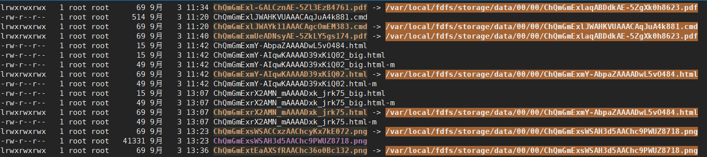

1.docker安装fastdfs+fastdht
1 | IP为宿主机ip,指定此IP后会使用宿主机网络,即容器内启动的端口宿主机上都会有 |
2.fastdfs防盗链配置
编辑容器内部 /etc/fdfs/http.conf配置文件，注意第三项修改，文件必须存在且可以被访问到，不然访问的时候会一直卡死住
1 | # HTTP default content type |
重启容器内部的nginx
1 | /usr/local/nginx_fdfs/sbin/nginx -s reload |
防盗链的token生成代码示例。
1 | <dependency> |
1 | //fileurl示例:group1/M00/00/90/ChP4nmEx3BCAACgfAACy8Sp--xQ309.png |
直接加上storage的地址可以尝试生成文件或图片地址，可以多次生成此包含token的url。若token失效或者错误，则会跳转到配置的/root/error.jpg这个文件上。
3.其他fastdfs相关
1.命令api
查看fastdfs信息
1
/usr/bin/fdfs_monitor /etc/fdfs/storage.conf
命令上传图片测试
1
/usr/bin/fdfs_upload_file /etc/fdfs/client.conf ./nginx-1.14.0.tar.gz
命令文件删除
1
/usr/bin/fdfs_delete_file /etc/fdfs/client.conf group1/M00/00/00/wKg4CltFU7WAAzX-AA-B0CmJB5A.tar.gz
2.文件路径解释
在fdfs传一份文件时，通常会返回下面的一串字符，这包含了该文件在服务器端一些存储信息
1 | M00/00/00/wKg4C1tFmTWAFPKBAADdeFFxlXA240.png |
下面解释一下这串东西都是什么：
- group1：
是storage的组号，一个fastdfs集群可以有多个组，一个组内可以有多个storage节点（备份容灾） - M00：
Mxx：xx为十六进制字符，表示存放的基路径（base path）序号。如果存放的base path只有一个，那固定就是M00，这样FastDFS支持多个磁盘（base path），所以要通过Mxx来区分，其中xx为磁盘的序号，基于0。
数据就可以根据
store_path0=/data/fastdfs/storage # 如果store_path0没有就去找base_path存数据，两个是一样的，所有固定为M00 - /00/01/:
store_path0=/data/fastdfs/storage配置的目录下的目录，用于存放上传的数据
3.fastdht
由于FastDFS本身不能对重复上传的文件进行去重，而FastDHT可以做到去重。FastDHT是一个高性能的分布式哈希系统，它是基于键值对存储的，而且它需要依赖于Berkeley DB作为数据存储的媒介，同时需要依赖于libfastcommon。
